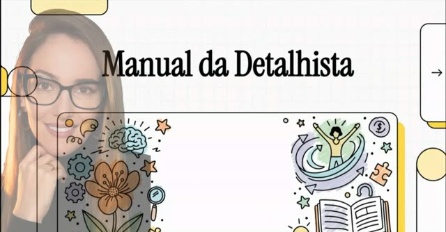
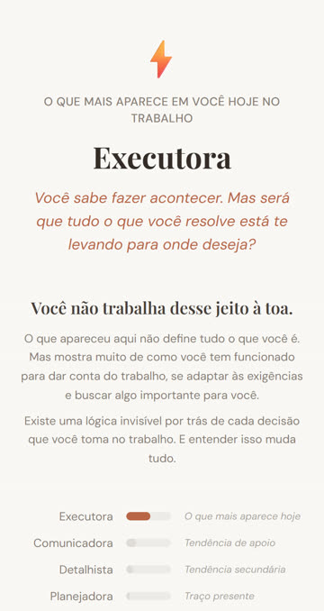
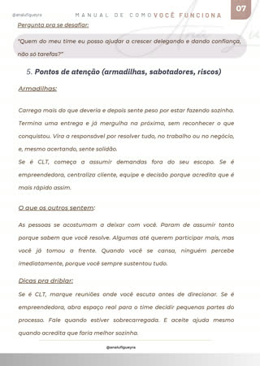

É justamente ele que faz você trabalhar demais, se posicionar de menos e continuar provando o seu valor. Enquanto isso, a promoção, o preço justo e o reconhecimento ficam sempre pra depois.
Para mulheres CLT ou CNPJ que já tentaram produtividade, terapia ou teste de perfil, e sentem que o padrão sempre volta.
Quero descobrir o meu talento fora do lugarR$37 · Acesso imediato · 7 dias de garantia
Todo mundo confia em você. Por isso todo mundo joga em você.
Você entrega acima da média. Por isso demora demais pra colocar algo imperfeito no mundo.
Você conecta com todo mundo. Mas muda de posição quando sente que alguém deixou de gostar.
Você mantém tudo de pé sem fazer barulho. Por isso só lembram de você quando algo cai.
Não é falta de talento. É um talento seu trabalhando no lugar errado.
Todo mundo te disse que isso é autossabotagem. Que existe uma parte sua te boicotando.
Talvez seja o contrário: um talento seu tentando te proteger, do jeito que funcionou lá atrás.
Eu chamo isso de Mapa da Trava. Veja como ele funciona com um talento só, a Responsabilidade:
Lá atrás, dar conta de tudo foi o jeito de ter segurança. Se você resolvesse, nada desandava.
Isso virou responsabilidade: você é a profissional em quem todo mundo confia.
Hoje você delega e refaz à noite. Assume o que não é seu. E a oportunidade vai pra quem teve tempo de aparecer.
Continuar responsável, só que pelo que é seu. A primeira pergunta: "isso é meu, ou eu preciso continuar sendo quem resolve?"
Toda forma de funcionar tem uma história. O diagnóstico não inventa qual é a sua. Ele te ajuda a enxergar.
Não tem nada errado com você. Tem algo certo funcionando no lugar errado.
Em uma, é responsabilidade. Em outra, conexão. Em outra, excelência. Você pode ter mais de um desses talentos. O diagnóstico não tenta te colocar numa caixa. Ele identifica qual deles assume o comando quando você está sob pressão.
Você faz, entrega, resolve antes de ser pedida. Onde trava: fazer tanto que ninguém percebe o que você vale. Ser reconhecida pelo esforço, não pelo impacto.
Você conecta, inspira, mobiliza. Onde trava: usar esse brilho pra ser querida em vez de respeitada. Aparecer muito e ser levada a sério pouco.
Você revisa, analisa, quer ter certeza antes de agir. Onde trava: a análise que nunca termina, o momento que passa enquanto você ainda ajusta.
Você organiza, sustenta e mantém tudo de pé em silêncio, sem criar conflito. Onde trava: calar quando devia falar e carregar mais do que mostra. Ser lembrada quando precisam de ajuda, raramente quando precisam de direção.
Ela não é um talento. É uma adaptação: uma máscara que você veste pra conseguir performar e pertencer em qualquer ambiente. Você vira especialista em caber, não em ocupar. O diagnóstico mostra isso, e mostra o que está por baixo da máscara.
Uma leitura de como você funciona de verdade no trabalho, CLT ou CNPJ. Você responde pelo celular, em cerca de 10 minutos, sobre o que realmente faz no dia a dia, não sobre o que acha que deveria fazer. No final, você recebe o seu Mapa da Trava:

Devolutiva em vídeo

Seu resultado no app

Manual completo em PDF
Qual talento mais assume o comando no seu trabalho, e como ele aparece no seu dia a dia.
Esse talento já te protegeu de alguma coisa. A leitura te ajuda a reconhecer do quê, sem afirmações prontas sobre a sua história.
A promoção que não veio. O preço que você não cobrou. A energia que sobra pros outros e falta pra você.
Não uma lista de dicas. Uma primeira resposta diferente, específica pro seu talento, pra testar essa semana.
Pra ouvir a leitura explicada, no seu tempo.
Pra reler quando precisar.
Pequenas mudanças concretas que já aconteceram depois dos atendimentos. Mais de 150 mulheres atendidas.
Era a que revisava o trabalho de todo mundo antes de aceitar como pronto.
Parou de revisar o trabalho de quem já confiava, e sobrou tempo pra fazer o que só ela sabia fazer.
Era a que mudava de posição assim que sentia alguém discordando.
Aprendeu a ouvir uma discordância sem sentir que estava sendo atacada.
Era a empreendedora que dava desconto antes de pedirem, marcava na caderneta e parcelava a perder de vista, pra não arriscar a relação com as clientes.
Parou de oferecer desconto, deixou a caderneta de lado, diminuiu o parcelamento e passou a se posicionar como dona do negócio, não só como vendedora.
Era a que entregava tudo, revisava tudo e carregava tudo.
A competência dela não estava servindo ao negócio. Estava servindo pra provar que ela continuava indispensável.
Teste de perfil te dá um rótulo. Aqui você descobre qual talento seu assumiu o comando, onde ele está te custando e qual é a primeira resposta diferente. O rótulo é o começo, não o fim.
Cerca de 10 minutos, pelo celular. Você responde sobre o que já faz todo dia.
Assim que o pagamento é aprovado, você recebe por e-mail o acesso ao diagnóstico, ao vídeo e ao manual.
Não. A leitura é sobre o talento que mais aparece em você, com base nas suas próprias respostas.
Não. Você responde sobre como age no trabalho hoje. Se um convite pra investigar a origem fizer sentido, ele aparece, nunca como afirmação pronta sobre a sua história.
Não. É uma leitura comportamental aplicada ao trabalho, prática e sem linguagem clínica. Se você já faz terapia, ela traduz o que você entende em ação no ambiente profissional.
Se você terminar a leitura e não reconhecer pelo menos uma lógica sua que não enxergava antes, eu devolvo os seus R$ 37. Sete dias, sem perguntas.
Comportamento Profissional Feminino
Eu aprendi cedo a perceber o clima antes de as coisas acontecerem. Virou o meu maior talento. Por muito tempo, foi também o meu maior pedágio.
Depois, estudei pra dar nome ao que eu já enxergava. Hoje uso tudo isso pra mostrar o que está de fato dirigindo o seu jeito de trabalhar, e o que muda quando o seu talento volta pro lugar certo.
@analufigueyra
Diagnóstico da Trava Profissional
R$37
Pix ou cartão de crédito · Acesso imediato
Se você terminar a leitura e não reconhecer pelo menos uma lógica sua que não enxergava antes, eu devolvo os seus R$ 37. Sem perguntas.
Precisa descobrir quando aquilo que existe de melhor em você começou a trabalhar contra o lugar que você quer ocupar agora.
Seu Mapa da Trava, a devolutiva em vídeo e o manual em PDF, por R$37.
Quero ocupar o meu lugarCompra segura. Acesso imediato. Se você não se enxergar na leitura, devolvo o seu dinheiro em até 7 dias.
Eu no meu lugar.